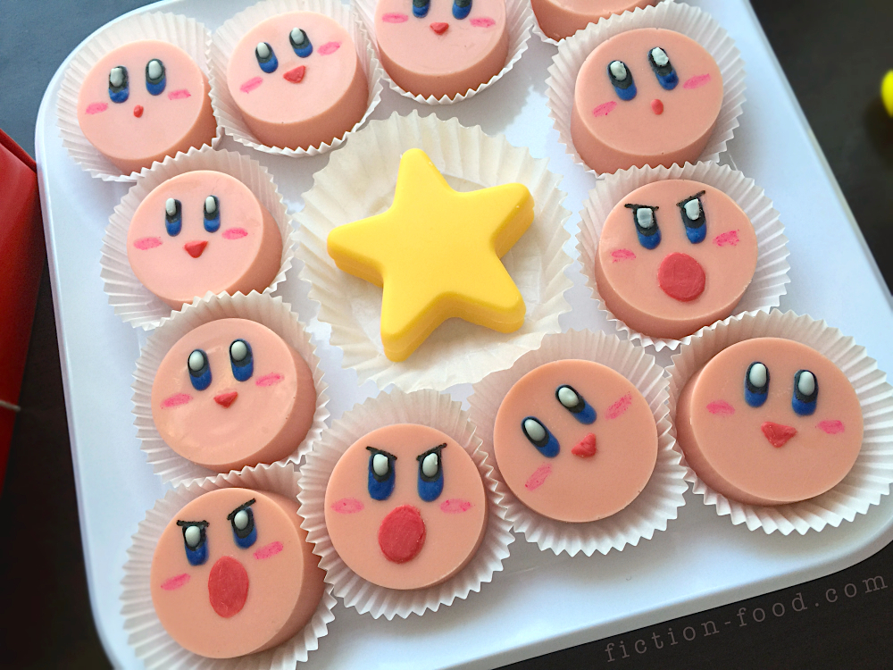

Previous: Skyrim Sweet Roll
Kirby Candy Patty

Hungry enough to inhale some sweets? Look no further than
Fiction-Food Cafe's
recipe for these cute little Kirby candies!
Ingredients:
Filling:
- 1 Cup + 2 Tbsp. Powdered Sugar
- 1 Tbsp. Butter, room temp/softened
- 1/2 tsp. Cherry or Cotton Candy Flavoring
- 1 Tbsp. Heavy Cream
Coating/Decoration
- 1 Bag Pink Candy Melts
- Paramount Crystals
- Several Pieces Bright White Candy Melts
- Several Pieces Dark Blue Candy Melts
- Several Pieces Red Candy Melts
- Dark Pink Food Color Marker
- Black Food color Marker
Directions
-
Filling: In a medium mixing bowl combine the powdered sugar, butter, extract, & cream.
Beat until it comes together & then turn the mixer to high speed & beat until it's nice & creamy (if it's sticky, add a little more powdered sugar).
Put the dough on a large sheet of plastic wrap & roll it into a log, the circumference of which should be about an 1/8" less than the mold your using.
Slide this wrapped log of filling into the paper towel tube & then place it in the fridge to chill for about 45 minutes (the tube helps the filling log keep it's shape on the bottom).
-
Candy Coating: Remove the filling log from the fridge & slice it into about 1/4" thick discs using a sharp knife.
In a double boiler or a large glass bowl over a pot of hot water, melt about 1/2 the bag of pink candy melts with about a tablespoon or 2 of E-Z Thin (or paramount crystals) stirred in (the crystals make the melts thinner & more pourable).
Spoon a small amount of melt into each mold so that the bottoms are covered about 1/8" thick. Tap the mold to release any air bubbles & to spread the melt evenly (putting the silicone mold on a tray helps with this).
Place the mold in the freezer for a few minutes to solidify the melt.
Place one disc each into the molds & then spoon more melt over top so it goes down the sides & the filling is completely covered & the top is flat.
Tap the mold many time on the counter again to get out the air bubbles & to settle the melt.
Let sit on the counter for 30 minutes or more to solidify completely.
-
Decorating: Line a tray with waxed or parchment paper. Pop the solidified candies out of the mold & place them on the paper. In a small bowl, melt several pieces of dark blue melts with a few pieces of EZ-Thin in the microwave for 30 seconds at first & then 15 second intervals after that until fully melted & very smooth & thin. Use a toothpick to "paint" on the eyes (see photos above). While that's drying use the dark pink food marker to draw on the cheeks. Now that the blue for the eyes has hardened, use the black food color marker to cover half of the eyes in black. Melt several pieces of white candy melts & use another clean toothpick to put the highlights on the eyes, over most of the black (see photos). Next, melt several pieces of red candy melts the same way you melted the blue. Use a clean toothpick to paint on the mouths (see photos). Place the completed candies in mini paper cups/liners, into a little gift box, or wrap in red foil candy wrappers. Or simply put on a plate!
Return